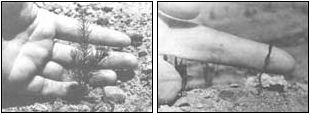

[1] A mattock can be used to pry up an asparagus clump by inserting the blade beneath the plant's root system. [2] When this clump was divided, it produced 250 plants! [3] A spading fork makes the transplanting procedure easier on a gardener' back. [4] Washing away the dirt will help you see how to untangle individual plants from a clump.